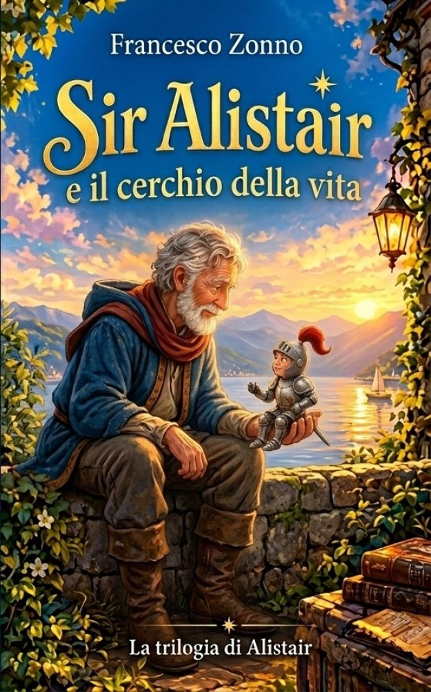
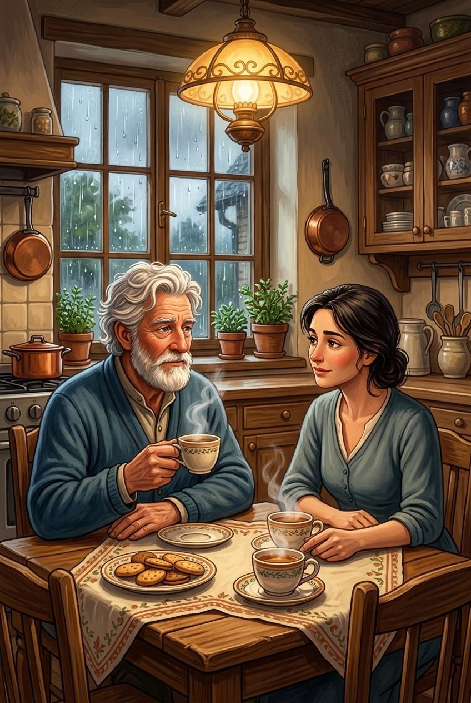
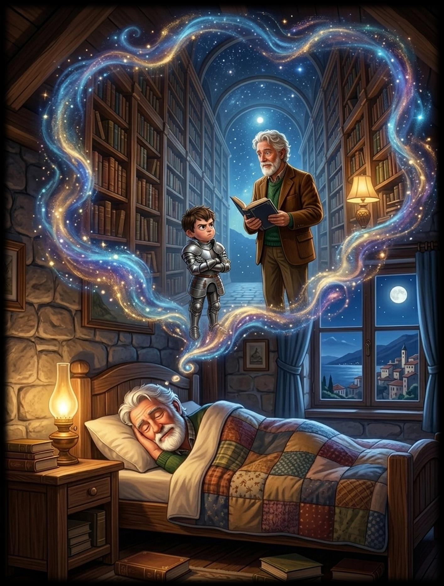
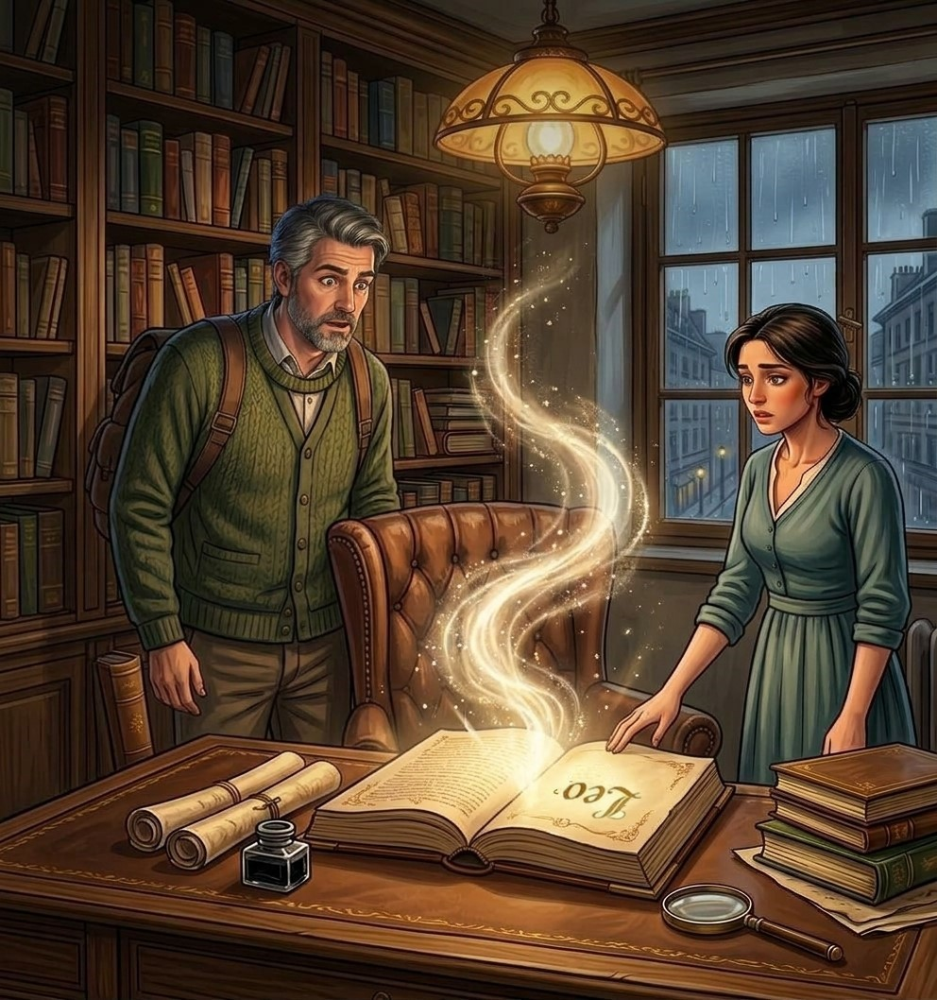
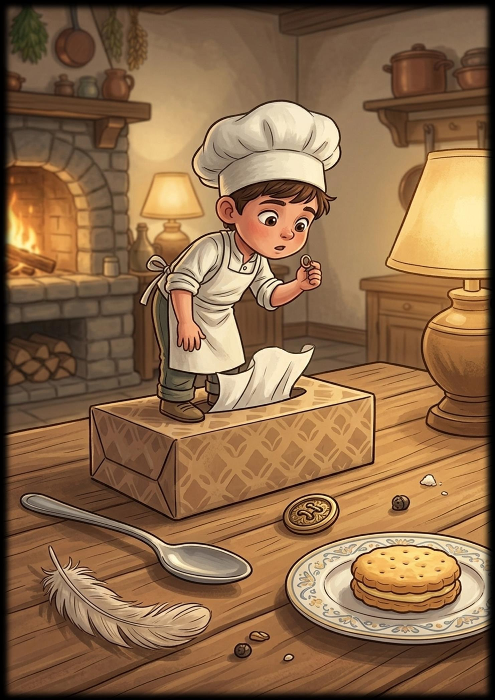
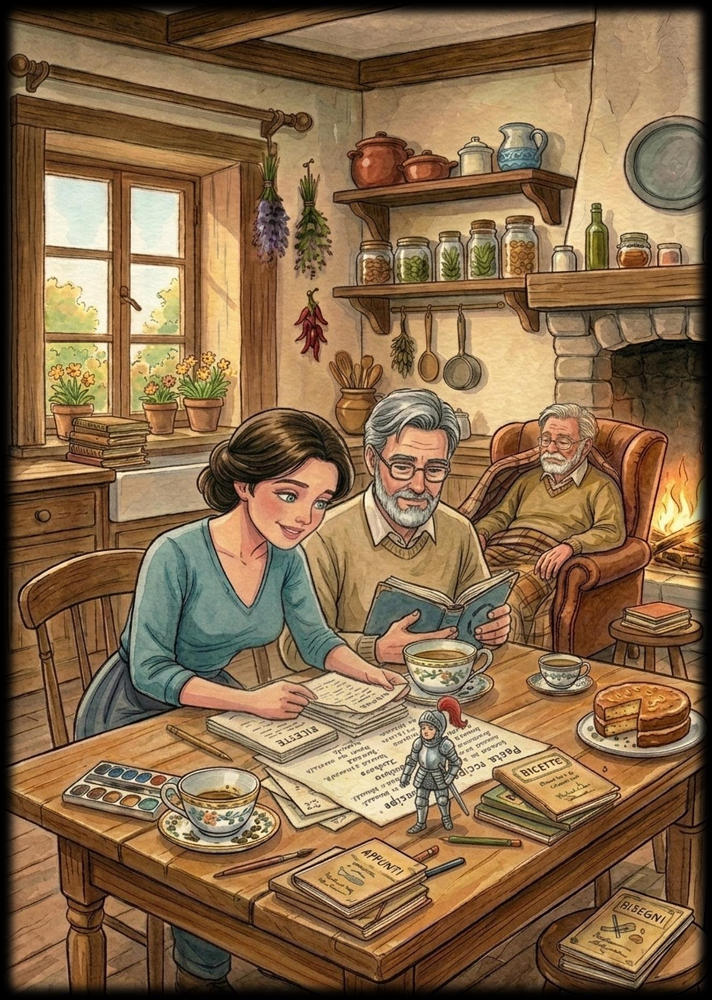

📖
La memoria
I ricordi possono diventare incerti, ma le tracce lasciate da una vita possono essere raccolte e custodite.
Leo è ormai anziano. Le parole a volte gli sfuggono, i ricordi si confondono e perfino le avventure più importanti sembrano allontanarsi. Ma una storia lasciata in sospeso sta aspettando di essere ritrovata.
Il capitolo conclusivo della trilogia: un'avventura tra mistero, memoria, famiglia e il legame speciale tra Leo e Sir Alistair.

Marta e Andrea si accorgono che il padre sta perdendo il filo di alcuni ricordi. Nei suoi appunti trovano indizi che li conducono alla biblioteca comunale e a un libro misterioso, rimasto nascosto per anni.
Quel volume non è un semplice oggetto: custodisce il passaggio verso il mondo di Sir Alistair. Per aiutare Leo, i figli dovranno seguirne le tracce e trovare un modo per riavvicinarlo alle storie che hanno accompagnato la sua vita.
Alistair, con il suo carattere inconfondibile e le sue osservazioni poco diplomatiche, sa che non tutto può essere riportato com'era. Ma ciò che una persona ha lasciato agli altri può continuare a vivere.

Il finale della trilogia riporta insieme i personaggi e i temi dei primi due libri, accompagnando Leo nell'ultima parte del suo percorso.
I ricordi possono diventare incerti, ma le tracce lasciate da una vita possono essere raccolte e custodite.
Marta e Andrea cercano di comprendere il mondo del padre senza sostituirsi a lui e senza inventare ciò che non sanno.
Il piccolo cavaliere accompagna Leo e la sua famiglia con ironia, ostinazione e una fedeltà che attraversa il tempo.
Le illustrazioni originali accompagnano il viaggio tra la vita quotidiana di Leo, il libro misterioso e il mondo di Alistair.




Dal bambino che inventava avventure, all'adolescente che aveva smesso di raccontarle, fino all'uomo anziano che fatica a ritrovare alcuni ricordi: il terzo volume chiude il percorso di Leo e di Sir Alistair.
Può essere letto come conclusione della trilogia; per seguire l'evoluzione dei personaggi e cogliere tutti i richiami, il percorso consigliato parte dal primo libro.

La trilogia di Alistair nasce da manoscritti che Francesco Zonno aveva scritto da ragazzo, alle scuole medie, e che sua madre aveva conservato. Dopo la sua scomparsa, ritrovare quei fogli ha significato riaprire una porta sul passato e dare nuova forma a personaggi e avventure rimasti a lungo in attesa.
Sir Alistair, Leo e Fiammetta sono cresciuti da quei primi racconti e da una storia personale che, nel terzo volume, trova il proprio compimento.